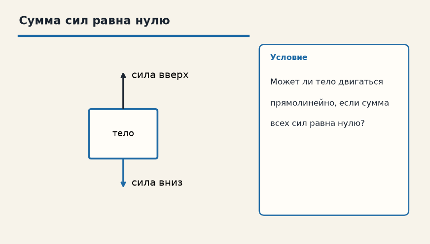

Тема «Первый закон Ньютона (ИСО)»: физический смысл, единицы величин, типичные ошибки и два разобранных примера.

Схема к условию.
Физический смысл
Существуют такие системы отсчета (инерциальные), относительно которых тело, на которое не действуют силы (или их действие скомпенсировано), движется равномерно прямолинейно или покоится.
Первый закон выделяет особые системы отсчёта — инерциальные. В них тело, на которое силы не действуют или их сумма равна нулю, не разгоняется и не тормозит: оно либо покоится, либо идёт прямо с постоянной скоростью.
Слово «инертность» как раз про это упрямство: скорость сама не меняется. Чтобы появилось ускорение, нужна ненулевая равнодействующая. Нулевая сумма сил ускорения не создаёт.
В автобусе это чувствуется телом: водитель тормозит, ноги уже стоят на замедлившемся полу, а туловище ещё сохраняет прежнюю скорость и наклоняется вперёд. С точки зрения земли ты двигался и продолжаешь двигаться, пока тебя не остановит сила.
Формула и единицы
В инерциальной системе при компенсации сил a = 0: покой или равномерное прямолинейное движение.
Пояснение
Когда автобус резко тормозит, ты падаешь вперед — тело сохраняет скорость.
Когда автобус резко тормозит, тебя бросает вперёд: тело сохраняет скорость, хотя салон уже замедлился.
Типичные ошибки
«Сумма сил равна нулю» не значит «тело обязано стоять». Оно может ехать прямо и равномерно. Это и есть первый закон.
Схему к задаче нарисуйте сами. Решение открывается отдельно.
Разбор 1
Шайба
Шайбу толкнули по гладкому льду. Трением и другими горизонтальными силами можно пренебречь. Как она движется после толчка?
Сначала данные, затем перевод в СИ, если он нужен, потом ход и ответ.
Дано. равнодействующая горизонтальных сил равна нулю
В СИ. Перевод не нужен: все величины уже заданы в СИ.
Найти. характер движения
Решение.
При нулевой равнодействующей скорость не меняется.
Шайба едет прямолинейно и равномерно.
Прямолинейно и равномерно.
Схема для сверки. Её рисуют до того, как открывают решение.
Разбор 2
Книга
Книга покоится на столе. Чему равна равнодействующая всех сил, действующих на неё?
Сначала данные, затем перевод в СИ, если он нужен, потом ход и ответ.
Дано. тело покоится в инерциальной системе
В СИ. Перевод не нужен: все величины уже заданы в СИ.
Найти. равнодействующая
Решение.
Покой означает нулевое ускорение.
Значит, сумма сил равна нулю.
Нулю.
Схема для сверки. Её рисуют до того, как открывают решение.
Разбор 3
Пассажир
Автобус резко тормозит, стоящий пассажир наклоняется вперёд. Какое свойство тела это показывает?
Сначала данные, затем перевод в СИ, если он нужен, потом ход и ответ.
Дано. скорость автобуса уменьшается, пассажир не удерживается ремнём
В СИ. Перевод не нужен: все величины уже заданы в СИ.
Найти. объяснение
Решение.
Пока сила не изменила скорость пассажира, он сохраняет прежнюю скорость относительно земли.
Это инертность.
Инертность.
Схема для сверки. Её рисуют до того, как открывают решение.
Разбор 4
Вагон
Поезд идёт равномерно и прямолинейно. Мяч на полу вагона сам не катится. Противоречит ли это первому закону?
Сначала данные, затем перевод в СИ, если он нужен, потом ход и ответ.
Дано. вагон движется равномерно и прямолинейно
В СИ. Перевод не нужен: все величины уже заданы в СИ.
Найти. вывод
Решение.
Такая система отсчёта инерциальна.
Относительно пола мяч покоится, сумма сил на него равна нулю.
Не противоречит.
Схема для сверки. Её рисуют до того, как открывают решение.
Разбор 5
Ненулевая сила
На тело вдоль прямой действует неуравновешенная сила. Может ли скорость оставаться постоянной?
Сначала данные, затем перевод в СИ, если он нужен, потом ход и ответ.
Дано. равнодействующая не равна нулю
В СИ. Перевод не нужен: все величины уже заданы в СИ.
Найти. ответ
Решение.
Ненулевая равнодействующая даёт ускорение.
Скорость меняется.
Нет.
Схема для сверки. Её рисуют до того, как открывают решение.
Разбор 6
Космос
Корабль вдали от планет выключил двигатели. Сопротивления нет. Как он движется?
Сначала данные, затем перевод в СИ, если он нужен, потом ход и ответ.
Дано. после выключения двигателя силы практически отсутствуют
В СИ. Перевод не нужен: все величины уже заданы в СИ.
Найти. движение
Решение.
Равнодействующая равна нулю.
Корабль сохраняет набранную скорость: летит прямолинейно и равномерно.
Прямолинейно и равномерно.
Схема для сверки. Её рисуют до того, как открывают решение.
Разбор 7
Столкновение с определением
Ученик пишет: «если силы уравновешены, тело обязано остановиться». Исправьте формулировку.
Сначала данные, затем перевод в СИ, если он нужен, потом ход и ответ.
Дано. сумма сил равна нулю
В СИ. Перевод не нужен: все величины уже заданы в СИ.
Найти. верная формулировка
Решение.
Нулевая равнодействующая не создаёт ускорения.
Тело либо покоится, либо движется равномерно и прямолинейно.
Тело покоится или движется равномерно и прямолинейно.
Схема для сверки. Её рисуют до того, как открывают решение.